Trillion
Nguyen.
Design systems, mobile, and interaction design — built for the humans using them.
Born Between
Cultures, Designing
for Humans.
I was born in Southern California and grew up between the US and the Philippines — caught between two worlds, often feeling like an outsider in both. That tension became the catalyst for everything.
Design became my way to communicate when words felt insufficient. A language that transcended cultural barriers and let me connect, create, and belong. I earned a degree in Graphic Design and naturally gravitated toward product design — drawn by curiosity, empathy, and the challenge of building things that actually work for the people using them.
Over 7+ years I've designed for athletes, clinicians, patients, and fintech users. I'm a proud parent of two daughters and a son. That's the brief that keeps everything grounded.
"Design is the language I speak when words aren't enough."
How I Think
About Design.
Sidebar
Redesign
Rethinking how navigation should coexist with content as a fintech product scales — moving from a floating action bar to a collapsible, user-controlled sidebar.
Full Case Study →
Business Problem.
As Aspect's product matured, the floating action bar designed for an MVP-era product — minimal pages, simple flows — became a structural liability. New features meant more nav items, and the floating approach couldn't scale without cluttering the content layer it was meant to coexist with.
Every team adding a feature was competing for real estate in a fixed floating element. The product was growing. The navigation paradigm wasn't. This wasn't a polish problem — it was a ceiling, and the business needed a navigation architecture that could grow with the product rather than fight it.
"The floating bar that once felt lightweight had become the product's biggest structural liability."
Understanding Users.
Aspect's primary users were operations and scheduling teams at contact center companies. Their workflow was data-dense and daily — managing shift schedules, agent performance, and trade requests. The nav wasn't something they visited occasionally; it was the scaffolding for their entire workday.
Power users had built workarounds: multiple tabs open in parallel, keyboard shortcuts memorized, browser bookmarks bypassing the main nav entirely. Workarounds are always the signal. Users had adapted to a system that wasn't working, because they didn't believe a better option existed.
"Users tolerate things that frustrate them when they don't believe a better option is possible."
Existing
Navigation.
The original nav lived in a floating action bar fixed to the top of the viewport. On a sparse product it had worked. As the product matured, it began overlapping critical UI, obscuring content during scroll, and creating persistent visual tension between navigation and the work users were trying to do.
It was also context-blind — identical across a complex data table and a simple settings page. Navigation without awareness of where it was living.
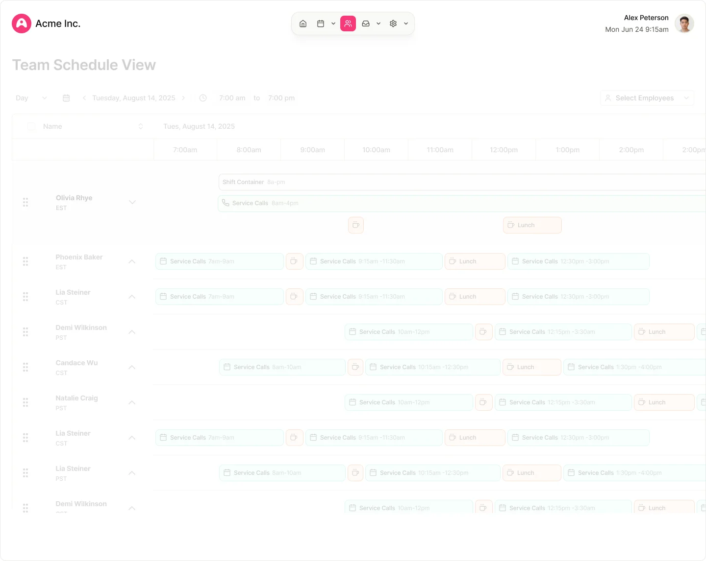
Research.
Session recordings surfaced an unexpected pattern: users were moving the cursor toward the nav bar and then hesitating — hovering but not clicking. The floating element had become a source of anxiety. Users weren't sure if interacting with it would disrupt what they were currently doing.
Competitive benchmarking against Notion, Linear, and Figma showed a clear industry shift toward anchored, collapsible sidebars for data-dense applications. These products had learned that navigation consistency reduces decision fatigue. You always know where to look. The floating bar was breaking that contract every time a user changed context.
Journey Mapping.
Mapping the daily workflow of a scheduling manager surfaced four distinct navigation moments — and clarified which one was failing:
- ArriveOrientation — landing in the app and getting bearings for the session. Nav bar worked here.
- MoveNavigation — switching between modules. Nav bar worked here too.
- ReferenceQuick-glance — checking where they are while staying deep in content. This is where it failed.
- LeaveContext reset — understanding where to return next session. Nav bar worked passively.
The sidebar solves the quick-glance moment: always visible, always telling you where you are, without competing for attention.
Information
Architecture.
Moving from floating to fixed required rethinking navigation as a persistent layer — always present, never intrusive. Three states emerged, each serving a different user intent without breaking the mental model between them:
- ExpandedIcons + labels — full context for new users and exploratory sessions
- CollapsedIcon rail only — compact footprint for power users who know the product
- HoverFlyout panel — contextual labels in collapsed state, no layout shift required
Each state needed to communicate orientation (where you are) not just destination (where you can go). Active state legibility was non-negotiable across all three collapse levels.
Early Concepts.
Early concepts explored three anchor points — left, top, and bottom — before committing to the sidebar. Bottom nav was ruled out quickly (desktop context, not mobile). A top-fixed approach replicated the original problem with different packaging.
The left sidebar was clear, but the collapse behavior needed to be prototyped before the concept could advance. A mid-fidelity clickable prototype was built to test trigger location, transition feel, and whether the icon rail alone was enough to navigate in the collapsed state.
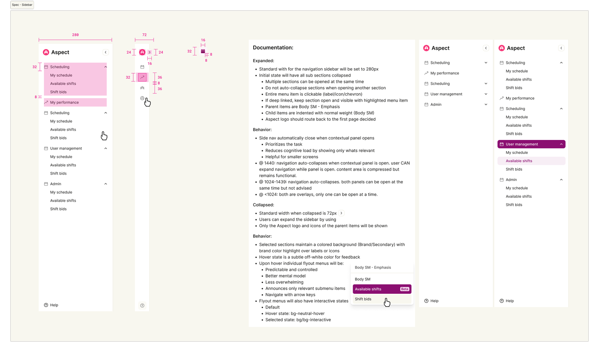
Wireframes.
Wireframes focused on the collapsed state — the riskier of the two to get wrong. Three label approaches were tested at low fidelity: persistent mini-labels below icons, tooltips on hover, and a full flyout panel on hover.
Persistent labels cluttered the rail and defeated the purpose of collapsing. Tooltips felt slow — they required deliberate intent to reveal. The flyout panel won: full label context on hover, no layout shift, no loss of the compact footprint users had chosen.
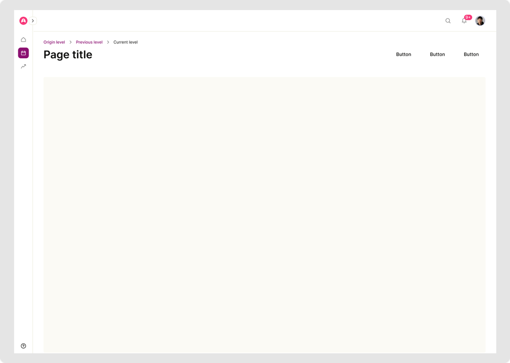
Design Exploration.
The core design challenge in the collapsed state was preventing disorientation. When only icons are visible, users need enough context to stay oriented — without adding visual noise to a state chosen specifically for its compactness.
The edge handle was discovered through prototype testing, not intentional design. Users in the collapsed state were hunting for a way to re-expand without moving all the way to the top collapse toggle. A narrow draggable handle at the panel edge surfaced naturally as a solution — instinctive to grab, invisible until needed. It came from watching behavior, not inventing it.
"The best features in this project weren't designed — they were discovered by watching people use the prototype."
Final Design.
Navigation moved off the floating layer and into a fixed sidebar anchored left. A persistent collapse toggle at the top gives users direct control over their layout. The sidebar "remembers" who you are — state persists across sessions, so your preference is set once and respected every login after that.
Active states are deliberate: the current section stays highlighted regardless of collapse level, giving users constant passive orientation without requiring any action to access it.
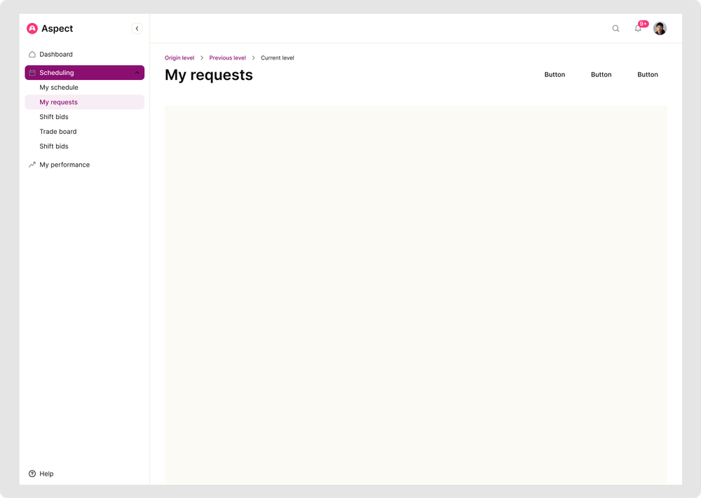
Interaction
Details.
The flyout in the collapsed state uses a deliberate hover delay — fast enough to feel responsive, slow enough to avoid accidental triggers when the cursor passes through. Labels appear with a subtle fade, not a pop, so the reveal feels like information surfacing rather than a UI interruption.
The collapse transition uses a custom easing curve: decelerating into the collapsed state so the panel feels like it's settling, not snapping. Motion values were pulled directly from the token system, keeping animation consistent with the broader product.
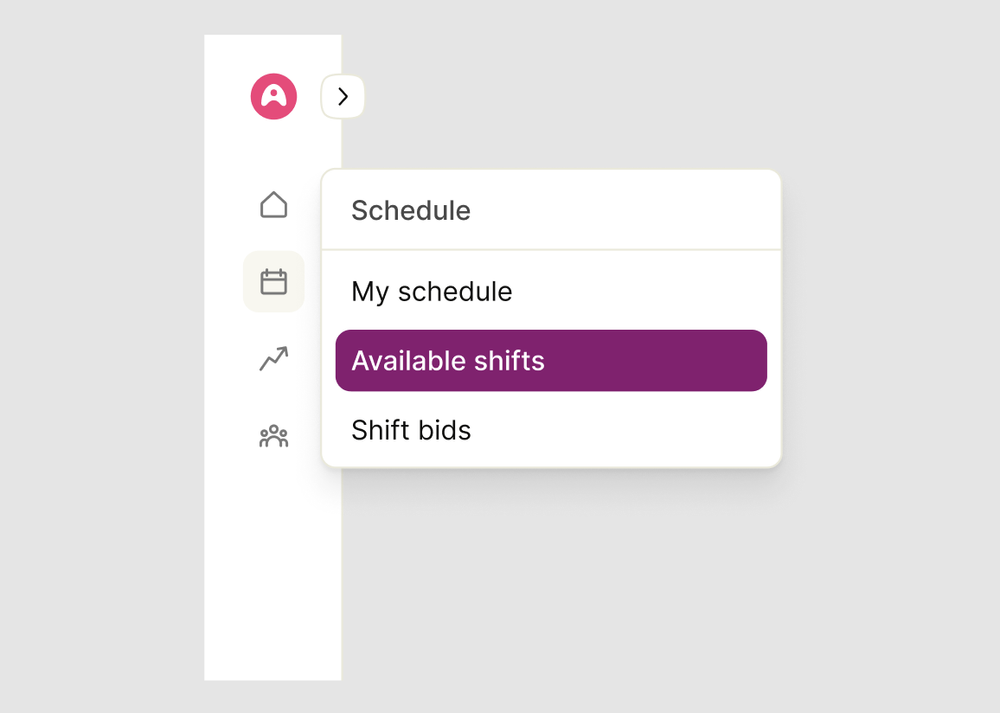
Impact.
Post-launch analytics surfaced two results the team hadn't predicted. First: the collapse feature was adopted immediately and heavily — more than half of active users spent the majority of their sessions in the collapsed state. Second: the expanded state saw stronger engagement than the old floating bar had ever produced among new users.
Both groups found exactly what they needed. Power users got a compact, efficient workspace. New users got a clear, labeled orientation layer. The sidebar served two distinct mental models simultaneously — which is the definition of navigation that works at scale.
"Navigation no longer competes with content. Both can exist without compromise."
Reflection.
The hardest part of this project wasn't the design. It was the conversation. The original nav bar had been in the product for two years, had internal champions, and users had adapted to it. The argument required making a clear distinction: familiarity is not the same as preference.
The prototype made that argument better than any document could. Watching people try the collapse interaction — the exact moment their body language shifted from skeptical to comfortable — that was the real deliverable. The Figma file was documentation of something stakeholders had already decided they wanted. The prototype was the decision.
"The most important design tool in this project wasn't Figma. It was a clickable prototype in a stakeholder walkthrough."
Patient
Motivation.
Patients interacting with a healthcare app aren't primarily motivated by features — they're motivated by outcomes. They want to feel like their effort is being seen, tracked, and connected to their health goals.
Existing apps captured data without creating meaning. A patient could see their step count but not understand what it meant for their care plan — or whether their clinician had even seen it. Designing for motivation meant designing for closure: the sense that an action taken had been received and mattered.
Full Case Study →
Healthcare
Workflows.
Clinicians worked across two surfaces: a desktop web dashboard for reviewing patient data and managing care plans, and a mobile app for on-the-go check-ins. Patient activity data fed into their dashboard as part of the longitudinal health record — but only if that data was structured and consistent.
A competitive analysis of existing tracking tools — fitness trackers, wearables, clinical dashboards — confirmed the gap: none produced data in a format clinicians could meaningfully act on. Freeform logging created noise, not signal.
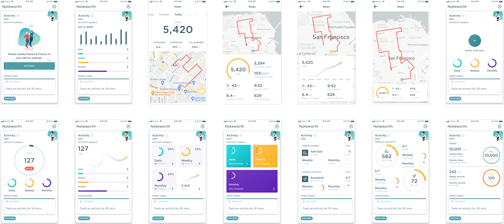
Mobile Design.
The patient-facing surface was almost exclusively mobile. That constraint made every decision ruthless. The activity view had to answer three questions at a glance: Did I log today? How am I trending? What's my goal?
Anything beyond that belonged in a secondary view. The small screen wasn't a limitation — it was a forcing function that kept the design focused on what patients actually needed, not what was technically possible to display. In healthcare, simplicity is a clinical responsibility, not a design preference.
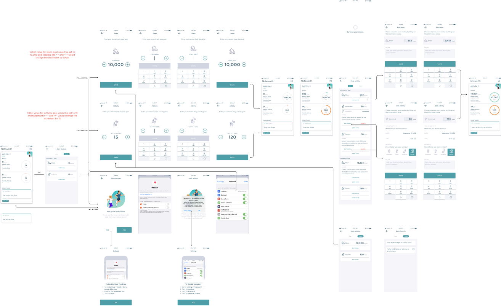
Accessibility.
Healthcare is one of the highest-stakes accessibility contexts: a confused user isn't just frustrated — they might miss a health marker or fail to report something that matters to their care. Cognitive load was treated as an accessibility concern, not a UX nicety.
Every interaction needed to be completable by a patient who might be fatigued, anxious, or managing a condition that affected focus. That meant: single-action screens where possible, progress feedback at every step, and language that confirmed what happened — not just what to do next.
We designed for the hardest version of the user. When the experience works for them, it works for everyone.
"Simplicity is not just trendy — it's vital for user success in contexts where cognitive load is already high."
Clinician
Collaboration.
The product's core value was collaboration — the shared record between clinician and patient. Tracking only mattered if clinicians could act on the data. The design created two views of the same underlying information: a patient view optimized for logging and motivation, and a clinician view optimized for trend analysis.
A detailed flow diagram mapped every micro-interaction and data handoff point across both surfaces — becoming the primary engineering artifact and ensuring both views stayed in sync from one shared data model.
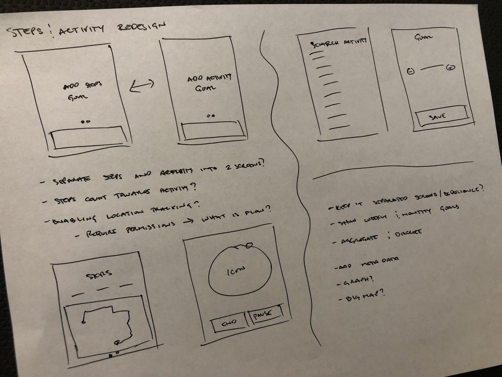
Habit Formation.
Activity tracking only creates value if patients do it consistently. Most tracking apps nail the routine (submit data) but miss the trigger (why now?) and the reward (what changed?). The trigger and reward are what determine whether an action becomes a habit.
The solution was contextual nudges tied to the patient's goal schedule — not generic daily reminders — and completion states that felt genuinely satisfying. An animated checkmark. A progress ring that filled. A confirmation that used the patient's first name. Small moments of acknowledgment that turned a clinical data entry task into something that felt personal and worth returning to.
"A patient who feels acknowledged after logging is more likely to log again than one who gets a silent confirmation."
Measuring Progress.
The progress view was the most technically constrained but emotionally important screen in the tracker. It needed to show trend data in a way that felt encouraging rather than clinical — a patient with inconsistent logging shouldn't feel like they failed when they opened it.
The design used rolling averages rather than daily totals, and anchored progress to the goal rather than to a perfect record. "Here's where you are relative to your goal" rather than "here's every day you missed." That reframe — a data decision, not a visual one — had a measurable impact on patient return rate and engagement.
"The most impactful design decision in this project was a framing choice, not a visual one."
Why a Design
System.
The decision to build a design system wasn't made in a planning meeting — it was forced by reality. Teams were building the same components independently and making different decisions about spacing, color, and interaction patterns. The product felt subtly inconsistent in ways users couldn't articulate but viscerally experienced.
The primary business case wasn't efficiency — though that came. It was quality: a shared foundation that made consistency the default. When every team has to decide what "danger red" looks like, someone will decide differently. The system removes that choice. In doing so, it removes that inconsistency.
"A design system isn't a Figma library. It's a shared language — and building one means getting everyone to speak it."
Auditing
Inconsistencies.
The audit was humbling. Across the product ecosystem: eleven distinct button styles, four dropdown interaction patterns, no single agreed-upon color for "danger." Teams had made reasonable local decisions that created unreasonable global fragmentation.
The audit served two purposes: documenting what existed (to understand scope) and surfacing the worst offenders (to build the case for change). It became the first artifact of the system — a reference that showed teams, all at once, what inconsistency looked like laid flat. Seeing it was often enough to create alignment.
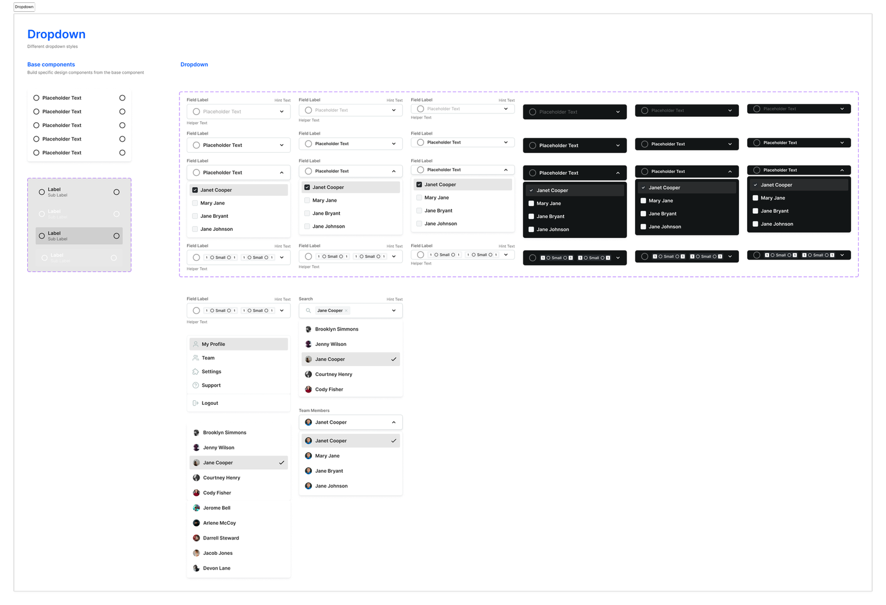
Component Strategy.
The wrong approach would have been to build the system in isolation and announce it to teams. The right approach was to build it in public — starting with the components teams were actively asking for, shipping them with documentation, and iterating on real usage.
Components were released in priority order by frequency of use, not design elegance. The most-used components shipped first, even when they were the least interesting to design. A button system is unglamorous. It's also the thing every team touches every day. That's where the leverage lives.
- Layer 1Atoms — buttons, inputs, icons, badges, tags. The foundation everything else composes from.
- Layer 2Molecules — form fields, dropdowns, modals, cards. Atoms in combination.
- Layer 3Organisms — nav, data tables, dashboards, page templates. Full product patterns.
Tokens.
Design tokens were the foundation that made everything composable. Color wasn't stored as hex values — it was stored as semantic names: color.feedback.error, color.interactive.primary.
A single change to the token layer propagated through every component simultaneously. Tokens were also tool-agnostic — the same values were consumed by Figma, iOS, Android, and web, giving every team a shared source of truth that required no translation. The token layer made the system cross-platform from day one, not as a retrofit.
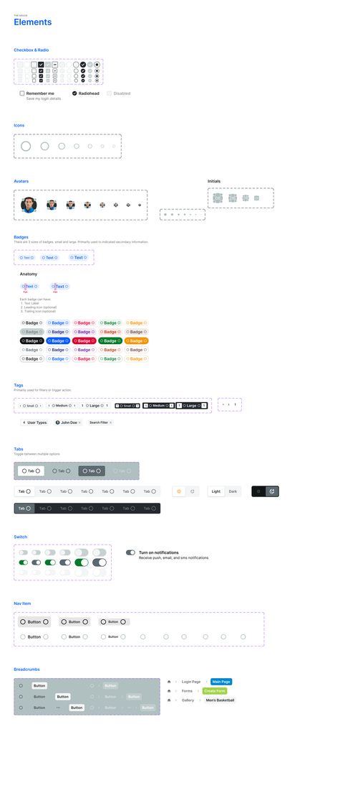
Accessibility.
Accessibility wasn't a checklist applied at the end — it was baked into the token system at the foundation. Every color pairing was checked for WCAG AA contrast compliance before it was published to the library. Pairings that failed didn't ship.
Interactive states — focus, hover, active, disabled — were treated as first-class design decisions. Every component shipped with accessibility annotations: screen reader behavior, keyboard navigation patterns, ARIA roles, and focus order specified alongside the visual spec.
Accessibility at the system level meant designers didn't have to rediscover the right behavior every time. The correct default was the path of least resistance. Making the wrong choice required deliberate extra effort.
Documentation.
Documentation was the part of the design system that teams actually used. A component without documentation isn't adoptable — it requires the original designer to explain it every time someone encounters it. That's not a system. That's a bottleneck.
Every component shipped with: a usage example, do/don't patterns, prop specifications, accessibility notes, and a changelog. Documentation was written for the person who found it without context — a developer starting a new feature, a designer joining the team, a PM estimating scope. Self-service or failure.
"A design system without documentation is a gift no one can open."
Governance.
A design system without governance is a design system with an expiration date. Governance defined who could change the system, how changes were proposed, and how breaking changes were communicated to teams who depended on them.
A lightweight RFC (request for comment) process was introduced for significant changes. Modifications to shared components were reviewed by the teams that used them before shipping. This prevented the same fragmentation the system was built to solve from creeping back in through uncoordinated updates. The RFC process also became a mechanism for teams to contribute — turning the design system from something owned by one designer into something owned by the whole organization.
Developer
Collaboration.
Engineers were stakeholders from the first sprint. Component specs weren't static Figma files — they were interactive prototypes with explicit state documentation, token references, and edge case examples included as standard.
Engineers mapped every token reference in the spec directly to a code variable in the component library. When spec and code use the same vocabulary, translation errors disappear — and so do the "what did you mean by this?" conversations that had previously consumed most of the handoff cycle.
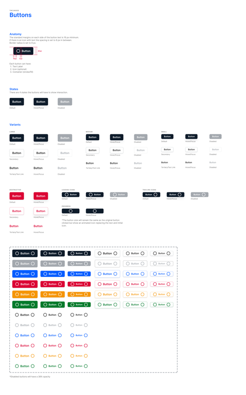
Adoption.
Adoption was harder than building. A system teams don't use is documentation debt. Three things drove it:
- 01Make the default the right thing — if using the system was easier than rebuilding, teams would use it. Friction was designed out of adoption, not just out of the components.
- 02Workshops over announcements — teams who built with the system in a guided session became its advocates. Understanding creates ownership in a way that documentation alone never does.
- 03Track adoption as a product metric — system usage was measured alongside product health metrics, making it a quantified goal rather than a feeling with no accountability.
Six months post-launch, the majority of new UI work across the product was built from system components.
Long-term
Impact.
The lasting impact of a design system is measured not in components but in decisions that didn't have to be made. Every time a team reached for a system component instead of building from scratch, that was a conversation that didn't need to happen, a decision saved for something that actually required thought.
The system also changed how the team thought: from individual decisions to shared infrastructure, from "what should this look like?" to "what's the right system pattern here?" That shift — from creating to curating — was the design system's most significant and lasting outcome.
"You don't ship a design system. You grow one. It only works when teams believe in it more than their own workarounds."
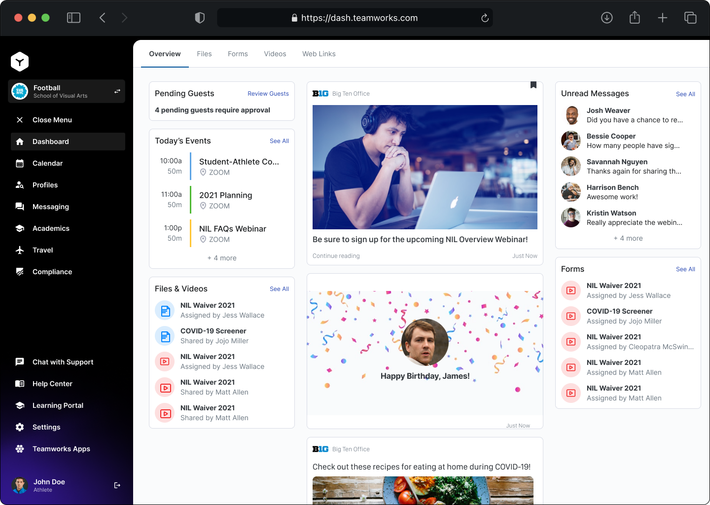